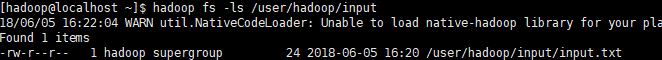
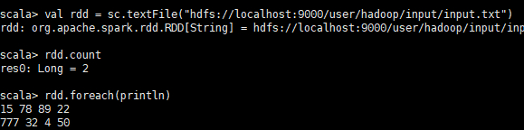
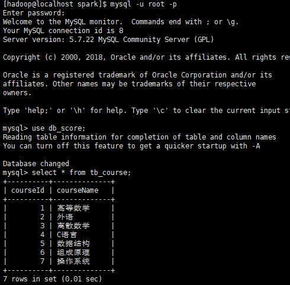
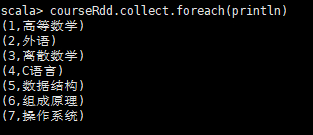
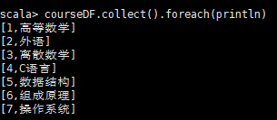
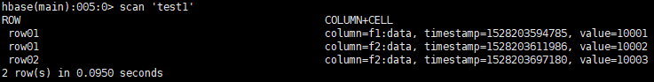
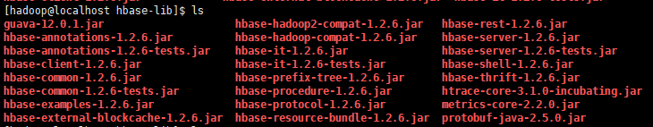
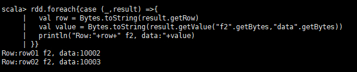

本文将介绍几种从Spark中读取数据存入RDD的方式，分别是
- 从HDFS中读数据
- 从MySQL数据库中读数据
- 从HBase数据库中读数据
本文中涉及到的工具版本如下：
- Hadoop：2.7.4
- Spark：2.1.1
- HBase：1.2.6
- MySQL：5.7.22
- JDK：1.8.0_171
- Scala：2.11.8
1 从HDFS中读数据
1.1 准备数据
首先启动Hadoop（使用start-dfs.sh），在HDFS上创建一个目录：1
$ hadoop fs -mkdir -p /user/hadoop/input
新建一个文件input.txt，内容如下：1
215 78 89 22
777 32 4 50
将input.txt上传到HDFS上：1
$ hadoop fs -put input.txt /user/hadoop/input
用ls命令查看是否上传成功：

1.2 读取数据
Spark将读取到的数据会保存在RDD中，关于RDD的介绍可以参考本站的这篇文章Spark-RDD的简单使用。
在Spark中从HDFS读取文本文件可以使用sc.textFile方法，将此方法的参数设为hdfs://master:port/path即可。
所以本例中的读取步骤如下：
进入spark的安装目录，使用bin/spark-shell来启动spark命令行编程（语言为scala）。
输入以下代码：1
2
3val rdd = sc.textFile("hdfs://localhost:9000/user/hadoop/input/input.txt")
rdd.count() // 输出行数
rdd.foreach(println) // 将所有内容打印出来

2 从MySQL数据库中读数据
2.1 数据来源
将db_score数据库中的tb_course表作为数据来源，表中内容如下图：

2.2 读取数据
Spark可以用JDBC来连接关系型数据库，包括MySQL、Oracle、Postgre等系统。
在执行spark-shell或者spark-submit命令的时候，需在--driver-class-path配置对应数据库的JDBC驱动的路径。
本例中，使用以下命令启动spark-shell：1
$ bin/spark-shell --driver-class-path /home/hadoop/mysql-connector-java-5.1.21-bin.jar
2.2.1 方法一：使用org.apache.spark.rdd.JdbcRDD
代码及说明如下：1
2
3
4
5
6
7
8
9
10
11
12
13
14
15
16
17
18
19
20
21import java.sql.DriverManager
import java.sql.ResultSet
import org.apache.spark.rdd.JdbcRDD
def createConnection() = { //创建连接
Class.forName("com.mysql.jdbc.Driver").newInstance()
DriverManager.getConnection("jdbc:mysql://localhost:3306/db_score","root","passwd")
}
def extractValues(r:ResultSet) = { //从数据库中取得数据后转换格式
(r.getInt(1),r.getString(2))
}
val courseRdd = new JdbcRDD( // 调用JdbcRDD类
sc, // SparkContext对象
createConnection, // 与数据库的连接
"select * from tb_course where ? <= courseid and courseid <= ?", // SQL语句
1, // 查询的下界
7, // 查询的上界
2, // partition的个数(即分为几部分查询)
extractValues // 将数据转换成需要的格式
)
courseRdd.collect.foreach(println) // 打印输出
结果如下图：

注：从上例中可以看出，使用JdbcRDD时，SQL查询语句必须有类似
ID >= ? AND ID <= ?这样的where语句（经测试，直接去掉会报错），而且上界和下界的类型必须是Long，这样使得JdbcRDD的使用场景比较局限。不过参照JdbcRDD的源代码，用户可以修改源代码以写出符合自己需求的JdbcRDD。
2.2.2 方法二：使用Spark SQL来返回一个DataFrame
代码及说明如下：1
2
3
4
5
6
7
8
9
10
11
12
13
14import org.apache.spark.sql.SQLContext
val sqlContext = new SQLContext(sc) // 生成SQLContext对象
val sql = "select * from tb_course" // SQL查询语句
val courseDF = sqlContext.read.format("jdbc").options(
Map("url"->"jdbc:mysql://localhost:3306/db_score",
"dbtable"->s"(${sql}) as table01", // SQL查询并对结果起别名
"driver"->"com.mysql.jdbc.Driver", // 驱动
"user"-> "root", // 用户名
"password"->"passwd") // 密码
).load()
courseDF.collect().foreach(println) // 打印输出
结果如下图：

3 从HBase数据库中读数据
3.1 准备数据
首先启动HDFS（start-dfs.sh）和HBase（start-hbase.sh）
输入hbase shell进入HBase的命令行模式
使用create命令创建一张有f1、f2两个列族的表：1
hbase(main) > create 'test1',{NAME => 'f1'},{NAME => 'f2'}
使用put命令给表test1添加一些测试数据：1
2
3hbase(main) > put 'test1','row01','f1:data','10001'
hbase(main) > put 'test1','row01','f2:data','10002'
hbase(main) > put 'test1','row02','f2:data','10003'
查看添加的数据：

3.2 读取数据
Spark连接HBase时需要一些必要的jar包，可在HBase安装目录下的lib文件夹中找到，将它们复制到一个自定义文件夹中（本例中在Spark安装目录下新建了名为hbase-lib的文件夹），这些jar包清单如下：

即metrics-core-2.2.0.jar、protobuf-java-2.5.0.jar、htrace-core-3.1.0-incubating.jar、guava-12.0.1.jar这四个jar包加上所有hbase-开头的所有jar包。（注：spark的环境中有metrics的jar包，但是可能是版本不匹配的问题，如果不加入此2.2.0版本的，程序会报错）
然后在Spark安装目录下的conf文件夹中找到spark-env.sh,在其中添加：
1 | export SPARK_CLASSPATH=/opt/software/spark/hbase-lib/* |
3.2.1 方法一：调用newAPIHadoopRDD
代码及相关说明如下：1
2
3
4
5
6
7
8
9
10
11import org.apache.hadoop.hbase.HBaseConfiguration
import org.apache.hadoop.hbase.client.Result
import org.apache.hadoop.hbase.io.ImmutableBytesWritable
import org.apache.hadoop.hbase.mapreduce.TableInputFormat
import org.apache.hadoop.hbase.util.Bytes
val conf = HBaseConfiguration.create()
conf.set(TableInputFormat.INPUT_TABLE,"test1") //设置需要扫描的表(test1)
val rdd = sc.newAPIHadoopRDD(conf,
classOf[TableInputFormat],classOf[ImmutableBytesWritable],classOf[Result])
由于TableInputFormat类的实现，Spark可以用Hadoop输入格式访问HBase，即调用sc.newAPIHadoopRDD，此方法返回一个键值对类型的RDD，其中键的类型为ImmutableBytesWritable，值的类型为Result（分别是此方法的后两个参数）。
因此，遍历此键值对RDD中的值即可取得想要的数据，代码如下：1
2
3
4
5
6rdd.foreach{case (_,result) =>{ //逐行遍历
val row = Bytes.toString(result.getRow) //获取当前行的Row key
val value = Bytes.toString(result.getValue("f2".getBytes,"data".getBytes))
//根据列族名(f2)和列名(data)取当前行的数据
println("Row:"+row+" f2, data:"+value) //打印输出
}}
运行结果如下：

3.2.2 方法二：用org.apache.hadoop.hbase中提供的方法
以下代码改编自《Hadoop+Spark生态系统操作与实战指南》，利用此代码可以实现对HBase的CRUD操作，代码如下：1
2
3
4
5
6
7
8
9
10
11
12
13
14
15
16
17
18
19
20
21
22
23
24
25
26
27
28
29
30
31
32
33
34
35
36
37
38
39
40
41
42
43
44
45
46
47
48
49
50
51
52
53
54
55
56
57
58
59
60
61
62
63
64
65
66
67
68
69
70
71
72
73
74
75
76
77
78
79
80
81
82
83
84
85
86
87
88
89
90
91
92
93
94
95
96
97
98
99
100
101
102
103
104
105
106
107
108
109import org.apache.hadoop.hbase.client._
import org.apache.hadoop.hbase.util.Bytes
import org.apache.hadoop.hbase.{HBaseConfiguration, HColumnDescriptor,
HTableDescriptor, TableName}
//创建表
def createHTable(connection: Connection,tablename: String): Unit=
{
//Hbase表模式管理器
val admin = connection.getAdmin
//本例将操作的表名
val tableName = TableName.valueOf(tablename)
//如果需要创建表
if (!admin.tableExists(tableName)) {
//创建Hbase表模式
val tableDescriptor = new HTableDescriptor(tableName)
//创建列簇1 artitle
tableDescriptor.addFamily(new HColumnDescriptor("artitle".getBytes()))
//创建列簇2 author
tableDescriptor.addFamily(new HColumnDescriptor("author".getBytes()))
//创建表
admin.createTable(tableDescriptor)
println("create done.")
}
}
//删除表
def deleteHTable(connection:Connection,tablename:String):Unit={
//本例将操作的表名
val tableName = TableName.valueOf(tablename)
//Hbase表模式管理器
val admin = connection.getAdmin
if (admin.tableExists(tableName)){
admin.disableTable(tableName)
admin.deleteTable(tableName)
}
}
//插入记录
def insertHTable(connection:Connection,tablename:String,family:String,column:String,
key:String,value:String):Unit={
try{
val userTable = TableName.valueOf(tablename)
val table=connection.getTable(userTable)
//准备key 的数据
val p=new Put(key.getBytes)
//为put操作指定 column 和 value
p.addColumn(family.getBytes,column.getBytes,value.getBytes())
//提交一行
table.put(p)
}
}
//基于KEY查询某条数据
def getAResult(connection:Connection,tablename:String,family:String,column:String,
key:String):Unit={
var table:Table=null
try{
val userTable = TableName.valueOf(tablename)
table=connection.getTable(userTable)
val g=new Get(key.getBytes())
val result=table.get(g)
val value=Bytes.toString(result.getValue(family.getBytes(),column.getBytes()))
println("value:"+value)
}finally{
if(table!=null)table.close()
}
}
//删除某条记录
def deleteRecord(connection:Connection,tablename:String,family:String,column:String,
key:String): Unit ={
var table:Table=null
try{
val userTable=TableName.valueOf(tablename)
table=connection.getTable(userTable)
val d=new Delete(key.getBytes())
d.addColumn(family.getBytes(),column.getBytes())
table.delete(d)
println("delete record done.")
}finally{
if(table!=null)table.close()
}
}
//扫描记录
def scanRecord(connection:Connection,tablename:String,family:String,column:String): Unit ={
var table:Table=null
var scanner:ResultScanner=null
try{
val userTable=TableName.valueOf(tablename)
table=connection.getTable(userTable)
val s=new Scan()
s.addColumn(family.getBytes(),column.getBytes())
scanner=table.getScanner(s)
println("scan...for...")
var result:Result=scanner.next()
while(result!=null){
println("Found row:" + result)
println("Found value: "+
Bytes.toString(result.getValue(family.getBytes(),column.getBytes())))
result=scanner.next()
}
}finally{
if(table!=null)
table.close()
scanner.close()
}
}
（注：以上代码中的Key均代表Row Key）
以上代码将在HBase中创建表、删除表、插入记录、根据行号查询数据、删除记录、扫描记录等操作都写成了函数，将以上代码在spark-shell中运行后，对HBase的操作直接调用相关函数即可，如下：1
2
3
4
5
6
7
8
9
10
11
12
13
14
15
16
17
18
19
20
21
22
23
24//创建一个配置，采用的是工厂方法
val conf = HBaseConfiguration.create
//Connection 的创建是个重量级的工作，线程安全，是操作hbase的入口
val connection= ConnectionFactory.createConnection(conf)
//创建表测试
createHTable(connection, "HadoopAndSpark")
//插入数据,重复执行为覆盖
insertHTable(connection,"HadoopAndSpark","artitle","Hadoop","002","Hadoop for me")
insertHTable(connection,"HadoopAndSpark","artitle","Hadoop","003","Java for me")
insertHTable(connection,"HadoopAndSpark","artitle","Spark","002","Scala for me")
//删除记录
deleteRecord(connection,"HadoopAndSpark","artitle","Spark","002")
//扫描整个表
scanRecord(connection,"HadoopAndSpark","artitle","Hadoop")
//根据表名、行键、列族、列名取当前Cell的数据
getAResult(connection,"HadoopAndSpark","artitle","Hadoop","002")
//删除表测试
deleteHTable(connection, "HadoopAndSpark")
4 后记
Spark可以通过所有Hadoop支持的外部数据源（包括本地文件系统、HDFS、Cassandra、关系型数据库、HBase、亚马逊S3等）建立RDD，本文没有讲到的，后续视情况补充。Spark支持文本文件、序列文件及其他任何Hadoop输入格式文件。
5 参考资料
[1]Karau,H.&A.Konwinski.Spark快速大数据分析[M].王道远译.北京:人民邮电出版社.2015-09:64-65,81-85
[2]余辉.Hadoop+Spark生态系统操作与实战指南[M].北京:清华大学出版社.2017:136-140